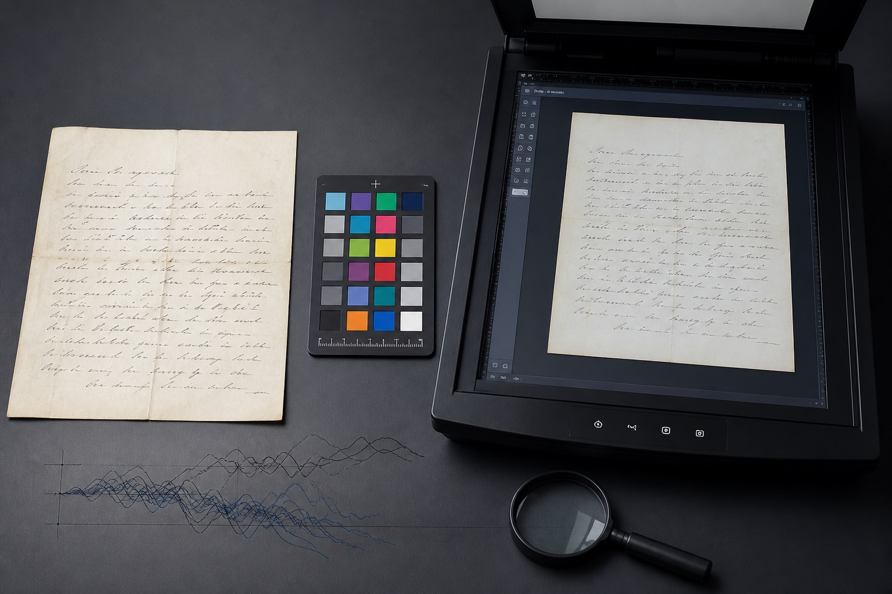

上海模仿笔迹资料，原件照片和扫描件怎样分开保存？
原件、扫描件和聊天软件压缩图提供的细节不同。上海站结合模仿笔迹、模仿签名和笔迹鉴定材料，说明文件来源与版本怎样记录。

原件、扫描件和聊天软件压缩图提供的细节不同。上海站结合模仿笔迹、模仿签名和笔迹鉴定材料，说明文件来源与版本怎样记录。

初稿、修改稿和定稿各有书写状态，保留版本顺序更容易看出连续正文的变化。本文从上海实际资料整理角度说明页面、版本与原图的保存方法。

正式版与简写版的长度、连接和收笔不同，混在一组会削弱样本的可读性。本文从上海实际资料整理角度说明页面、版本与原图的保存方法。

原件页码、扫描文件名和局部图片应使用同一编号，确保任何细节都能回到原始页面。本文从上海实际资料整理角度说明页面、版本与原图的保存方法。

上海站手写样本清单新增页码与场景说明，围绕上海模仿笔迹、模仿签名、模仿签字和笔迹鉴定更新服务资料。

上海商务签批与日常手写样本怎样分组？模仿笔迹整理方法，围绕上海模仿笔迹、模仿签名、模仿签字和笔迹鉴定介绍资料准备方法。

围绕模仿笔迹、模仿签名、模仿签字和笔迹鉴定整理实用资料。
介绍服务内容、样本要求、价格因素和办理流程。

介绍签名服务范围、签字样本要求、费用与周期。

介绍笔迹鉴定范围、对比材料、费用周期和常见问题。

介绍手写文件、个人字体、字符数量和交付方式。